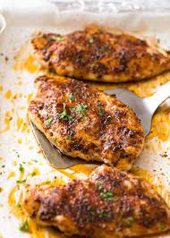

Air Fryer Chicken

A quick meal everyone will love!
This recipe is perfect for weeknights after a long day of work. Although this
recipes saves us loads of time, we'll never have to sacrifice flavor! This recipe requires little to no prep time and also only requires 4 ingredients. Its a win-win!
And that's on period!
Ingredients
- Chicken
- Adobo Seasoning
- Paprika
- Garlic Powder
- Italian Medley
Instructions
- Clean and remove excess fat from chicken
- Pat dry chicken
- Season Chicken on both sides and massage seasoning
- Preheat Airfryer to 400 degrees
- Place chicken in Airfryer
- Let cook for 25 mins on each side
- Enjoy!